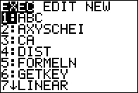

Cómo hacer para meter las cosas esas en la calcu
- Descarga TI-CONNECT CE de aquí
- Descarga los programas de aquí haciendo click en los que quieras descargar
- Abre TI-CONNECT
- Vete a "Calculator explorer"
- Conecta la calculadora con el cable USB al ordenador
- Dale al boton con la flecha que apunta hacia fuera del ordenador
- Selecciona los programas que quieras y pulsa
enter
Cómo hacer para que el Stegy no te borre todo
- Pulsa
2ND y luego MEM (está donde el +) en la calculadora
Aparece esto:


- Pulsa
2 o navega con las flechas hasta MEM Mget/Del... y pulsa ENTER


- Pulsa
7 o navega con las flechas hasta Prgrm y pulsa ENTER


- Los programas que no tienen una estrella a la izquierda son los que estan desprotegidos. Con esos te viene el Stegy en la Arbeit y te los borra y estás muy triste.


- Así que le das a
ENTER y se pone la estrella y todos estan happy piruli y el Stegy ni se entera de que lo tienes. Pero si está protegido del Stegy, no se pueden usar, así que cuando te la devuelva después de no borrar los programas, los vuelves a desproteger y estás otra vez happy piruli usándolos en la Arbeit.


Cómo hacer para usar los malditos programas, que para eso sirven
- Pues primero le das a
PRGRM (es un botón físico en la calculadora, 3 botones encima del 8)

- Seleccionas el programa que quieras con las flechas o con el número de la izquierda y pulsas
ENTER (aquí como ejemplo el del Strahlensatz)


- Das
ENTER otra vez porque sí


- Ahora aparecen las diferentes variables para cada fórmula (para cada programa son diferentes)


- Vas metiendo los números que te sepas y en los que no, pones
θ (theta), que se hace dando a ALPHA (el botón verde) y luego 3
Para ir al siguiente, das ENTER otra vez porque sí


- Al final aparecen las variables a la izquierda (se ve mal) y los valores después (aquí es
V de valor 7.905882353)


ATENCIÓN
La mayoría de los programas que de verdad sirven para (no el Buscaminas y todos los juegos tope mazo chupi promaster voll geil) están hechos por Miguel Ureña, el que atrae a toda la peña, y por eso son, por lo menos en parte, tan malos. No es mi culpa que tenga tan pocos skillz de calculadora, pero por lo menos ha hecho las fórmulas, lo que está bien, así que no me quejo